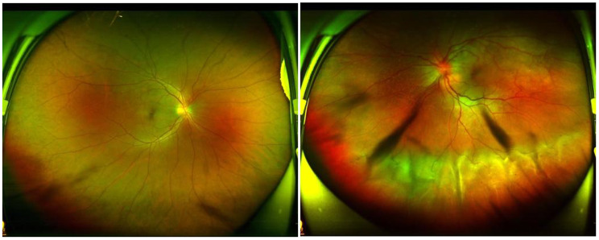
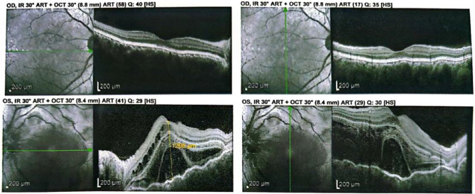
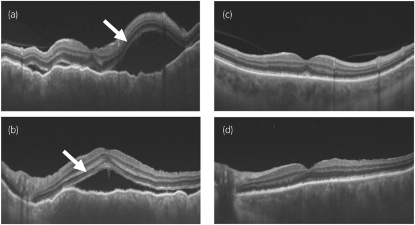

1437 — Viêm màng bồ đào do thuốc ức chế điểm kiểm miễn dịch (ICI uveitis) và thể giống VKH / Immune checkpoint inhibitor-associated uveitis and VKH-like syndrome
Tags: pattern:viem-mang-bo-dao pattern:viem-toan-hac-mac pattern:bong-vong-mac-thanh-dich pattern:day-hac-mac pattern:sunset-glow pattern:viem-hac-mac-do-thuoc pattern:hai-ben pattern:viem-mang-bao-dau vung:mat vung:hac-mac vung:vong-mac vung:tien-phong vung:dia-thi protocol:OCT protocol:EDI-OCT protocol:FA protocol:FAF protocol:UBM protocol:B-scan protocol:MRI-so-nao score:CTCAE
Mức chắc chắn (certainty): tổng hợp y văn (literature synthesis) — 1 tổng quan hệ thống 52 ca VKH-like (2025), 1 đoàn hệ pharmacovigilance 28 bệnh nhân/36 biến cố (2022), 1 đoàn hệ 71.931 + 71.931 bệnh nhân (TriNetX 2023), 1 tổng quan 290 ca báo cáo, 2 ca nguyên văn có ảnh, và guideline SITC 2021. Bằng chứng chủ yếu là ca báo cáo và đoàn hệ hồi cứu, không có RCT.
Vì sao bài này quan trọng: bài 1436 vừa chốt VKH tự phát — bệnh của người không có tiền sử can thiệp mắt, không có thuốc khởi phát. Nhưng từ khi thuốc ức chế điểm kiểm miễn dịch (immune checkpoint inhibitor, ICI) trở thành nền tảng điều trị melanoma, một thể giống hệt VKH xuất hiện ở bệnh nhân ung thư. Câu hỏi lâm sàng không phải "có phải VKH không" mà là "có được tiếp tục ICI không, và bằng chứng nào cho phép tiếp tục" — vì ngưng thuốc có thể mất kiểm soát khối u, còn tiếp tục có thể mù.
1. Tổng quan bệnh học – cơ chế hình ảnh – vì sao "VKH-like"
- Cơ chế miễn dịch: ICI (kháng CTLA-4, PD-1, PD-L1) gỡ bỏ phanh ức chế T-cell, làm mất dung thứ ngoại vi. Ở người có HLA-DR4, dòng T-cell tự phản ứng nhận diện kháng nguyên tế bào hắc tố (melanocyte antigens: Melan-A/MART-1, gp100, tyrosinase, TRP-1/2). Các kháng nguyên này có đồng thời ở:
- hắc mạc và mống mắt–thể mi → viêm màng bồ đào;
- da → vitiligo, poliosis;
- tai trong (stria vascularis) → ù tai, giảm thính lực;
- màng não → đau đầu, cứng gáy, pleocytosis dịch não tủy. Đây chính là lý do thể này bắt chước VKH chứ không chỉ là "viêm màng bồ đào trước đơn thuần".
- Vì sao thường hai bên: kháng nguyên là hệ thống, không phải tại chỗ; hắc mạc hai mắt cùng biểu hiện. Trong tổng quan hệ thống 52 ca, 73,1% có bằng chứng hai bên; trong đoàn hệ Pháp, 80% hai bên.
- TẠI SAO có bong võng mạc thanh dịch (serous retinal detachment, SRD): viêm hắc mạc làm tăng tính thấm mao mạch hắc mạc + bơm biểu mô sắc tố (RPE) suy → dịch tích dưới võng mạc. Trên OCT: hắc mạc dày + khoang dịch dưới võng mạc không có màng co kéo; trên FA: đốm rò (pinpoint leaks) thì sớm + đọng thuốc thì muộn.
- TẠI SAO có "sunset glow fundus": viêm hắc mạc mạn làm mất sắc tố RPE ở cực sau, lộ hắc mạc → đáy mắt màu cam–hồng, xuất hiện nhiều tuần đến nhiều tháng sau đợt cấp. Đây là dấu hiệu muộn, không có giá trị loại trừ lúc khởi phát.
- Thời điểm khởi phát: tổng quan 52 ca VKH-like: thời gian dùng ICI trước triệu chứng 22,2 ± 29,6 tuần (rất rộng); đoàn hệ Pháp: 17 ± 19 tuần. Có ca sớm sau 2 tuần và ca muộn sau nhiều tháng, kể cả sau khi ngưng thuốc. Vì vậy không có "cửa sổ an toàn" để loại trừ.
- Tần suất định lượng:
- Viêm màng bồ đào trong thử nghiệm lâm sàng: 0,3–6%; SITC ghi < 1%–6%. Toàn bộ biến cố mắt–hốc mắt 1–2,8%.
- Uveitis chiếm 46,2% trong 290 ca báo cáo biến cố mắt do ICI; một phân tích khác cho rằng uveitis chiếm gần 70% biến cố mắt.
- Đoàn hệ TriNetX 71.931 bệnh nhân ICI so với 71.931 bệnh nhân ung thư không ICI: HR 2,39 (95% CI 2,07–2,75) cho viêm màng bồ đào mới, theo dõi tới 144 tháng.
- Melanoma chiếm 61,7–69,2% ca; nivolumab 42,5%, ipilimumab 40,0% trong 290 ca; thể VKH-like: PD-1 đơn thuần 63,5%, phối hợp CTLA-4 19,2%.
- Yếu tố nguy cơ: melanoma, HLA-DR4, tiền sử viêm màng bồ đào (bùng phát 38,9% ở người có viêm màng bồ đào trước; 51,1% ở người có viêm trung gian/sau/toàn thể trước đó), phối hợp ICI, liều ipilimumab cao (nguy cơ biến cố nặng gấp 3,10 lần).
2. Mẫu hình + chẩn đoán phân biệt theo vị trí (Gamut)
- Theo giải phẫu:
- Viêm màng bồ đào trước (44%): đỏ mắt, đau, sợ ánh sáng, tế bào và flare tiền phòng, dính mống mắt sau. Đây là thể hay bị bỏ qua nhất vì bệnh nhân ung thư ít than đau mắt.
- Viêm trung gian: tế bào dịch kính, "snowbanks", phù hoàng điểm dạng nang.
- Viêm màng bồ đào sau: viêm hắc mạc, SRD, viêm mạch võng mạc, đĩa thị phù.
- Viêm toàn thể (panuveitis, 28–40,4%): thể nặng nhất, thường là VKH-like, có thể kèm triệu chứng toàn thân.
- Theo bối cảnh ung thư:
- Melanoma → VKH-like, birdshot-like; nguy cơ cao nhất.
- Ung thư phổi → biến cố thần kinh–mắt (nhược cơ, liệt dây) nhiều hơn uveitis.
- Ung thư thận/tế bào sáng → ca VKH-like đã báo cáo, thường đáp ứng corticoid tại chỗ.
- Gamut "viêm màng bồ đào hai bên ở bệnh nhân ung thư đang dùng ICI": VKH-like do ICI, VKH tự phát, viêm màng bồ đào giao cảm, birdshot, sarcoidosis, nhiễm trùng (lao, giang mai, CMV, HSV), di căn hắc mạc, u lympho nội nhãn (masquerade), MEKAR do ức chế MEK, và thuốc khác (bisphosphonate, rifabutin, cidofovir).
- Mnemonic "MELANIN": Melanoma/ICI, Extraocular signs (meningism, tinnitus, vitiligo), Low vision bilateral, Anterior cells + Amyloid? — không dùng mnemonic gượng; thay bằng 3 câu hỏi: (1) hai bên không? (2) hắc mạc dày + SRD không? (3) có triệu chứng ngoài mắt (da–tai–màng não) không? Nếu cả 3 → nghĩ VKH-like.
3. Bảng so sánh phân biệt (ma trận đối chiếu)
| Thực thể (entity) | Hình ảnh điển hình (OCT/FA/FAF) | Chốt vào (rule-in) | Chốt loại (rule-out) | Gợi ý xác nhận |
|---|---|---|---|---|
| VKH-like do ICI | Hắc mạc dày hai bên + SRD; FA: đốm rò + đọng thuốc; FAF: sunset glow muộn | Đang/đã dùng ICI + hai bên + hắc mạc dày + SRD; có thể kèm vitiligo, ù tai, đau đầu | Không có phơi nhiễm ICI; một bên đơn thuần + khối hắc mạc → nghĩ khác | Ngưng/giảm ICI thử + corticoid; đáp ứng nhanh ủng hộ |
| VKH tự phát | Giống hệt; SFCT 940/898 µm cấp → 347/447 µm sau 1 tháng (bài 1436) | Tiêu chuẩn Read 2001/SUN 2021, không có thuốc khởi phát, không tiền sử chấn thương/mổ mắt | Có ICI trong 6 tháng → phải loại VKH-like trước | HLA-DR4 hỗ trợ nhưng không phân biệt được; hỏi kỹ thuốc |
| Viêm màng bồ đào giao cảm | Viêm toàn thể hai bên, u hạt; mắt kích thích có tiền sử chấn thương/mổ | Tiền sử chấn thương xuyên thấu hoặc phẫu thuật nội nhãn ở mắt kia; cửa sổ 5 ngày–nhiều thập kỷ (kinh điển 14 ngày) | Không có tiền sử can thiệp mắt → loại | Hỏi tiền sử mổ/chấn thương; sinh thiết hiếm cần |
| Birdshot | Đốm giảm sắc tố hình bầu dục lan từ đĩa thị ra ngoại vi; viêm mạch | HLA-A29 dương, người da trắng lớn tuổi, không triệu chứng toàn thân | Có SRD + hắc mạc dày + ICI → nghĩ VKH-like | HLA-A29, ICGA |
| Sarcoidosis | U hạt, nốt quanh mạch máu, dày hắc mạc; đĩa thị phù | Hạch rốn phổi trên CT ngực, ACE tăng, BAL lympho | Không tổn thương ngực + không tăng ACE → ít nghĩ | CT ngực, ACE, sinh thiết |
| Nhiễm trùng (lao/giang mai/CMV/HSV) | Viêm màng bồ đào trước hoặc sau, dính mống mắt, tổn thương võng mạc hoại tử | PCR dịch tiền phòng/dịch kính dương, huyết thanh học dương | Đáp ứng corticoid đơn thuần không loại trừ nhiễm trùng | PCR, QuantiFERON, VDRL/TPHA |
| Di căn hắc mạc | Khối hắc mạc đặc, hồi âm trung bình–cao, không có SRD lan tỏa | Tiền sử ung thư; tổn thương một bên, khu trú, lớn dần | Hai bên + hắc mạc dày lan tỏa → nghĩ VKH-like | Siêu âm B-scan, OCT, sinh thiết nếu cần |
| U lympho nội nhãn (masquerade) | Tế bào dịch kính dạng "lepra", dày hắc mạc; IL-10/IL-6 > 1 | IL-10 dịch kính > 65 pg/mL, tế bào dị hình | Đáp ứng corticoid nhanh + hai bên đối xứng → nghĩ VKH-like hơn | Chọc dịch kính: cytology, IL-10/IL-6 (bài 1435) |
| MEKAR (ức chế MEK) | SRD hai bên nhiều ổ, không viêm tiền phòng; tự khỏi | Bắt đầu dabrafenib/trametinib, xuất hiện ngày–tuần | Có tế bào tiền phòng + hắc mạc dày → nghĩ VKH-like | Ngừng/thử thuốc, theo dõi 2–4 tuần |

Bệnh nhân nữ 52 tuổi, ung thư thực quản, sau 10 chu kỳ tislelizumab: mắt phải bình thường; mắt trái phù đĩa thị, bờ mờ, bong võng mạc xuất tiết phía dưới. Nguồn: Zhou Y, Lei X, Ma W, BMC Ophthalmol 2026 (PMC13112615), CC BY-NC-ND 4.0, nguyên bản.4. Protocol chụp + phân độ + xử trí
- Trước điều trị: không khuyến cáo tầm soát mắt thường quy cho mọi bệnh nhân ICI, nhưng khám mắt nền nên làm ở người có tiền sử viêm màng bồ đào, melanoma, hoặc đang dùng phối hợp ICI.
- Khi có triệu chứng (nhìn mờ, đau, đỏ, sợ ánh sáng, ruồi bay):
- Thị lực, sinh hiển vi đèn khe (tế bào/flare, dính mống mắt, KPs), nhãn áp.
- Soi đáy mắt giãn đồng tử + OCT hoàng điểm (SRD, phù hoàng điểm) + EDI-OCT (độ dày hắc mạc).
- FA nếu nghi viêm hắc mạc/viêm mạch; FAF tìm sunset glow; UBM nếu viêm trước/trung gian nặng; B-scan nếu môi trường đục.
- Xét nghiệm: CBC, ESR/CRP, ACE, lysozyme, QuantiFERON, VDRL/TPHA, HLA-DR4/A29, ANA; CT ngực nếu nghi sarcoid/lao.
- MRI sọ–hốc mắt nếu có dấu hiệu thần kinh–mắt; chọc dịch não tủy nếu đau đầu/cứng gáy — lưu ý không có pleocytosis không loại trừ VKH-like do ICI (ca tislelizumab).
- Chọc dịch tiền phòng/dịch kính (PCR, IL-10/IL-6) khi nghi nhiễm trùng hoặc masquerade.
- Phân độ CTCAE v5.0 (viêm màng bồ đào):
| Độ | Mô tả | Hướng xử trí |
|---|---|---|
| 1 | Không triệu chứng hoặc nhẹ; chỉ thấy tế bào tiền phòng | Corticoid tại chỗ; tiếp tục ICI; khám mắt theo dõi |
| 2 | Viêm màng bồ đào trước có triệu chứng, đáp ứng corticoid tại chỗ | Corticoid tại chỗ ± periocular; cân nhắc giữ ICI, khám lại 1–2 tuần |
| 3 | Viêm trung gian/sau/toàn thể, hoặc viêm trước nặng; hạn chế sinh hoạt | Tạm ngưng ICI; prednisone 1 mg/kg/ngày, giảm liều 4–6 tuần |
| 4 | Mù lòa mắt bị ảnh hưởng (thị lực ≤ 20/200) | Ngưng vĩnh viễn ICI; methylprednisolone IV 1–2 mg/kg/ngày; hội chẩn ung thư–mắt |
- Điều trị cụ thể: corticoid tại chỗ (prednisolone acetate 1%) + liệt điều tiết (cyclopentolate) chống dính; corticoid periocular khi viêm sau; corticoid toàn thân khi hai bên/nặng; thuốc tiết kiệm corticoid (methotrexate, mycophenolate, adalimumab) khi tái phát hoặc cần corticoid kéo dài.
- Bằng chứng kết cục: trong 52 ca VKH-like, 90,4% cần corticoid toàn thân hoặc nội nhãn, 59,6% ngưng ICI, 82,7% hồi phục hoàn toàn/remission thị giác. Trong đoàn hệ Pháp, 50% chỉ cần corticoid tại chỗ; 70% là độ 3; 60% ngưng ICI.
- Dùng lại ICI (rechallenge): quyết định đa chuyên khoa. Dữ liệu chung: sau khi dùng lại, 18% tái phát biến cố miễn dịch cùng loại; riêng uveitis trong một loạt 0/2 tái phát, nhưng ca tislelizumab tái phát rõ sau 2 lần truyền lại. Vì vậy: thể nhẹ kiểm soát bằng corticoid tại chỗ → có thể tiếp tục dưới giám sát; thể nặng/tái phát → đổi phác đồ ung thư hoặc ngưng vĩnh viễn.
flowchart TD
A[Bệnh nhân đang dùng ICI + nhìn mờ, đau, đỏ mắt] --> B[Khám mắt: thị lực, đèn khe, nhãn áp, soi đáy mắt]
B --> C[OCT hoàng điểm + EDI-OCT + FA/FAF]
C --> D{Phân độ CTCAE}
D -->|"Độ 1-2"| E[Corticoid tại chỗ, tiếp tục ICI, khám lại 1-2 tuần]
D -->|"Độ 3"| F[Tạm ngưng ICI + prednisone 1 mg/kg, giảm liều 4-6 tuần]
D -->|"Độ 4"| G[Ngưng vĩnh viễn ICI + methylprednisolone IV 1-2 mg/kg]
E --> H{Đáp ứng?}
F --> H
H -->|Không| I[Loại trừ nhiễm trùng, masquerade, di căn; thêm thuốc tiết kiệm corticoid]
H -->|Có| J[Hội chẩn ung thư: tiếp tục hay đổi phác đồ]
- Theo dõi: OCT + EDI-OCT mỗi 2–4 tuần trong đợt cấp, sau đó 3 tháng/lần trong năm đầu; FAF tìm sunset glow muộn; khám mắt ngay khi tái triệu chứng.
5. Biến thể bình thường và cạm bẫy
- Cạm bẫy 1 — một bên không loại trừ: 26,9% ca VKH-like trong tổng quan hệ thống không có bằng chứng hai bên lúc chẩn đoán. Ca tislelizumab khởi phát một mắt (mắt trái) dù bệnh hệ thống. Vì vậy khám mắt còn lại bắt buộc, kể cả khi không triệu chứng.
- Cạm bẫy 2 — "di căn hắc mạc" thay vì viêm: khối di căn đặc, khu trú, hồi âm trong, thường một bên; VKH-like dày hắc mạc lan tỏa hai bên + SRD. Siêu âm B-scan và OCT phân biệt được trong đa số ca.
- Cạm bẫy 3 — ngưng ICI quá tay: 50% ca trong đoàn hệ Pháp chỉ cần corticoid tại chỗ; ngưng ICI không cải thiện thị lực nhiều hơn mà có thể mất kiểm soát u. Quyết định phải dựa độ CTCAE + đáp ứng điều trị, không dựa "chẩn đoán VKH".
- Cạm bẫy 4 — nhầm với VKH tự phát: VKH tự phát cần loại trừ chấn thương/mổ mắt và thuốc khởi phát. Nếu bệnh nhân đang dùng ICI, chẩn đoán mặc định là VKH-like do thuốc cho tới khi chứng minh ngược.
- Cạm bẫy 5 — dịch não tủy "bình thường": ca tislelizumab có dịch não tủy lympho ưu thế nhưng KHÔNG pleocytosis, khác VKH kinh điển. Không có pleocytosis không loại trừ thể do thuốc.
- Cạm bẫy 6 — MEKAR: bệnh nhân melanoma có thể dùng phối hợp BRAF/MEK; MEKAR gây SRD hai bên nhiều ổ, không viêm tiền phòng, tự khỏi trong 2–4 tuần. Nhầm MEKAR với VKH-like dẫn tới dùng corticoid liều cao không cần thiết.
- Cạm bẫy 7 — bỏ sót viêm màng bồ đào trước: bệnh nhân ung thư thường không phàn nàn đau mắt; tế bào tiền phòng nhẹ có thể bị bỏ qua cho tới khi dính mống mắt, glôcôm tân mạch. Khám đèn khe là bắt buộc, không chỉ soi đáy mắt.
6. Tự lượng giá — Blind Quiz
Ca 1 — Nữ 52 tuổi, ung thư thực quản, sau 10 chu kỳ tislelizumab (kháng PD-1) đột ngột nhìn mờ mắt trái. Nhìn ảnh đáy mắt, mô tả trước.
- Gợi ý: mắt phải không triệu chứng; không chấn thương, không mổ mắt.
- Câu hỏi: (1) Bất thường chính ở mắt trái? (2) Ba chẩn đoán phân biệt? (3) Xét nghiệm nào chốt hướng?
Bấm để hiện đáp án (findings + chẩn đoán)
- Dấu hiệu: mắt phải bình thường; mắt trái phù đĩa thị, bờ mờ, bong võng mạc xuất tiết phía dưới (dịch dưới võng mạc lan tỏa).
- Chẩn đoán: viêm màng bồ đào sau/toàn thể do ICI, thể VKH-like — cơ chế: T-cell tự phản ứng với kháng nguyên tế bào hắc tố → viêm hắc mạc → SRD.
- Phân biệt: VKH tự phát (không có thuốc), di căn hắc mạc (khối đặc), nhiễm trùng (lao/giang mai/CMV).
- Chốt hướng: OCT (SRD + hắc mạc dày), FA (đốm rò), loại trừ nhiễm trùng bằng PCR/huyết thanh; dịch não tủy có thể không pleocytosis.
- Nguồn ảnh: Zhou Y, Lei X, Ma W, BMC Ophthalmol 2026 (PMC13112615), CC BY-NC-ND 4.0, nguyên bản.
Ca 2 — Cùng bệnh nhân, OCT hoàng điểm lúc vào và sau điều trị.

- Câu hỏi: Mô tả dịch dưới võng mạc trước điều trị. Sau corticoid, điều gì thay đổi — và điều gì không hồi phục?
Bấm để hiện đáp án
- Trước: mắt trái phù hoàng điểm lan tỏa + nhiều khoang dịch dưới võng mạc, có vách; mắt phải cấu trúc hoàng điểm bình thường.
- Sau corticoid: dịch dưới võng mạc giảm rõ; nhưng bất thường vùng ellipsoid zone có thể tồn tại — đây là dấu hiệu tổn thương tế bào cảm thụ đã xảy ra, giải thích vì sao điều trị sớm quan trọng.
- Bài học: OCT là công cụ theo dõi đáp ứng; SRD hồi phục nhanh nhưng di chứng EZ quyết định thị lực cuối.
- Nguồn ảnh: Zhou Y, Lei X, Ma W, BMC Ophthalmol 2026 (PMC13112615), CC BY-NC-ND 4.0, nguyên bản.
Ca 3 — Nam 68 tuổi, ung thư thận di căn phổi, đang nivolumab (kháng PD-1). Nhìn mờ hai bên.

- Câu hỏi: (1) Dấu hiệu trên OCT? (2) Vì sao có thể chỉ dùng corticoid tại chỗ? (3) Có được dùng lại nivolumab không?
Bấm để hiện đáp án
- Dấu hiệu: (a,b) dịch dưới võng mạc hai bên (mũi tên trắng) trước điều trị; (c,d) hết dịch sau corticoid tại chỗ.
- Chẩn đoán: VKH-like do nivolumab, HLA-DR4 dương; thể nhẹ–trung bình đáp ứng corticoid tại chỗ.
- Vì sao tại chỗ đủ: không có viêm tiền phòng nặng, SRD khu trú, đáp ứng nhanh; 50% ca trong đoàn hệ Pháp chỉ cần corticoid tại chỗ.
- Dùng lại: bệnh nhân tiếp tục nivolumab và duy trì đáp ứng một phần của di căn phổi — cho thấy không nhất thiết ngưng ICI vĩnh viễn khi kiểm soát được bằng corticoid.
- Nguồn ảnh: Imai H và cs., IJU Case Rep 2025;8(1):36–40 (PMC11693107), CC BY 4.0.
Bài liên quan chéo
- 1436 – Bệnh Vogt–Koyanagi–Harada (VKH tự phát) (thể không do thuốc — tiêu chuẩn Read/SUN, SFCT, sunset glow)
- 1435 – Hội chứng masquerade: u lympho nội nhãn (IL-10/IL-6, tế bào dị hình)
- 487 – Nhiễm độc võng mạc do thuốc khác ngoài HCQ (MEKAR, SRD hai bên tự khỏi)
- 1425 – Viêm nội nhãn sau tiêm nội nhãn
- 1426 – Viêm nội nhãn tái phát không đáp ứng
- 442 – Glaucoma và OCT (biến chứng dính mống mắt/glôcôm)
Ảnh
1437_ici-vkh_Fundus_PMC13112615-Fig1-CCBYNCND.jpg— Zhou Y, Lei X, Ma W, BMC Ophthalmol 2026 (PMC13112615), CC BY-NC-ND 4.0, nguyên bản (không crop/ghép).1437_ici-vkh_OCT_PMC13112615-Fig2-CCBYNCND.jpg— Zhou Y, Lei X, Ma W, BMC Ophthalmol 2026 (PMC13112615), CC BY-NC-ND 4.0, nguyên bản.1437_ici-vkh_OCT-bilateral_PMC11693107-Fig3-CCBY.jpg— Imai H và cs., IJU Case Rep 2025 (PMC11693107), CC BY 4.0, nguyên bản.- Chi tiết giấy phép từng ảnh:
images/CREDITS.md.
Không dùng để chẩn đoán độc lập khi chưa có người hướng dẫn.